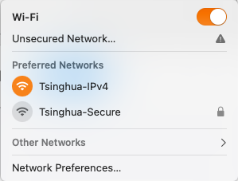
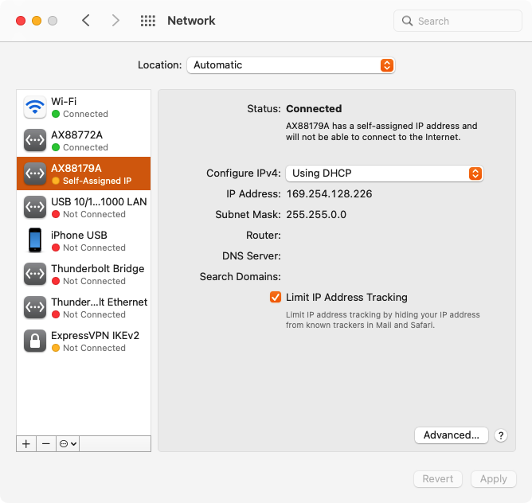
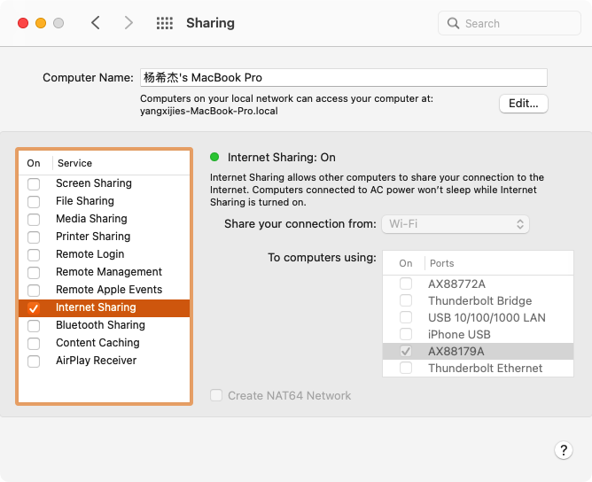
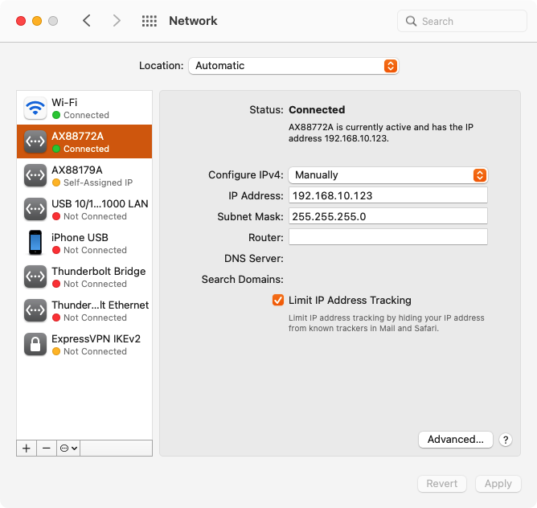

板卡共享macOS网络¶
在 macOS 12.6.1 x86_64 测试没问题
板卡有两个网口，虽然正式使用的时候只需要一个，但是强烈推荐准备两个网线将两个网口都连接至电脑，以防万一连接不上。
macOS通过无线网连接¶
打开 Wi-Fi，连接 Tsinghua-IPv4。注意这里不要连接 Tsinghua-Secure，因为这种连接方式加密导致电脑无法共享来自这个Wi-Fi的网络。

将板卡通过网线连接到电脑¶
将开发板的 eth0 通过网线连接到电脑。在连接上之后，打开 System Preferences > Network，可以看到多了一个 AX88179A 的网络在左侧边栏。点击之后，在右侧 Configure IPv4 选择 Using DHCP。注意这里一定要选择这个，如果自己去设置IP，会和之后的网络共享冲突。点击右下角 Apply。

打开网络共享¶
打开 System Preferences > Sharing > Internet Sharing，在 Share your connection from: 处选择 Wi-Fi，下面 To computer using: 处选择刚刚多出来的这个网络口 AX88179A。这样我们就把 Wi-Fi 共享给这条网线了。

打开终端，执行命令 ifconfig，可以看到多出了一个 bridge100 的网口：
bridge100: flags=8863<UP,BROADCAST,SMART,RUNNING,SIMPLEX,MULTICAST> mtu 1500
options=3<RXCSUM,TXCSUM>
ether a6:83:e7:72:2e:64
inet 192.168.2.1 netmask 0xffffff00 broadcast 192.168.2.255
inet6 fe80::a483:e7ff:fe72:2e64%bridge100 prefixlen 64 scopeid 0x15
Configuration:
id 0:0:0:0:0:0 priority 0 hellotime 0 fwddelay 0
maxage 0 holdcnt 0 proto stp maxaddr 100 timeout 1200
root id 0:0:0:0:0:0 priority 0 ifcost 0 port 0
ipfilter disabled flags 0x0
member: en6 flags=3<LEARNING,DISCOVER>
ifmaxaddr 0 port 27 priority 0 path cost 0
nd6 options=201<PERFORMNUD,DAD>
media: autoselect
status: active
里面写了 IP地址为 192.168.2.1 子网掩码为 255.255.255.0。这相当于是共享路由器的IP，我们接下来要在开发板中设置这个路由器的IP。
HiLinux修改配置¶
用 telnet 连接到板卡。这里请参考 开发板连接电脑，使用另一路网线连接至开发板的网口。
我这里使用的网络连接为 AX88772A (192.168.10.123) - eth1 (192.168.10.68)，使用 telnet 192.168.10.68 连接开发板。

使用 vi /etc/init.d/rcS 修改开发板IP：
ifconfig lo 127.0.0.1
ifconfig eth1 192.168.10.68 netmask 255.255.255.0 up
ifconfig eth0 192.168.2.68 netmask 255.255.255.0 up
其中 eth1 不需要修改。将 eth0 的IP修改成 192.168.2.x，我这里使用的是 192.168.2.68。
保存退出。
使用命令 reboot 重启 HiLinux。
测试HiLinux网络¶
目前开发板还没有DNS，我们现在自己的电脑上使用 ping baidu.com 拿到百度服务器的地址 110.242.68.66：
$ ping baidu.com
PING baidu.com (110.242.68.66): 56 data bytes
64 bytes from 110.242.68.66: icmp_seq=0 ttl=49 time=309.452 ms
64 bytes from 110.242.68.66: icmp_seq=1 ttl=49 time=52.414 ms
^C
--- baidu.com ping statistics ---
再次使用 telnet 192.168.10.68 连接开发板。
使用下面的命令添加默认为路由电脑。
$ route
Kernel IP routing table
Destination Gateway Genmask Flags Metric Ref Use Iface
192.168.2.0 * 255.255.255.0 U 0 0 0 eth0
192.168.10.0 * 255.255.255.0 U 0 0 0 eth1
$ ip route add default via 192.168.2.1 dev eth0
$ route
Kernel IP routing table
Destination Gateway Genmask Flags Metric Ref Use Iface
0.0.0.0 192.168.2.1 0.0.0.0 UG 0 0 0 eth0
192.168.2.0 0.0.0.0 255.255.255.0 U 0 0 0 eth0
192.168.10.0 0.0.0.0 255.255.255.0 U 0 0 0 eth1
这样只要不是发给 192.168.2.0 和 192.168.10.0 的包，都会走默认网关。
$ ping 110.242.68.66
PING 110.242.68.66 (110.242.68.66): 56 data bytes
64 bytes from 110.242.68.66: seq=0 ttl=48 time=62.797 ms
64 bytes from 110.242.68.66: seq=1 ttl=48 time=59.012 ms
^C
--- 110.242.68.66 ping statistics ---
可以看到百度的服务器是可以ping通的，这说明开发板已经可以通过 macOS 的网络共享联网了。
将路由表写入启动文件¶
重启之后，路由 0.0.0.0 192.168.2.1 0.0.0.0 UG 0 0 0 eth0 会消失。
我们将 ip route add default via 192.168.2.1 dev eth0 这条命令添加到 /etc/init.d/rcS 中。
$ vi /etc/init.d/rcS
...
ifconfig lo 127.0.0.1
ifconfig eth1 192.168.10.68 netmask 255.255.255.0 up
ifconfig eth0 192.168.2.68 netmask 255.255.255.0 up
ip route add default via 192.168.2.1 dev eth0
...
添加DNS¶
TODO
References¶
- https://apple.stackexchange.com/questions/186955/specific-network-settings-for-sharing-internet-connection
- http://kmahelona.blogspot.com/2013/04/share-your-internet-from-your-macbook.html
- https://discussions.apple.com/thread/250375975?answerId=250715933022#250715933022
- Linux添加默认网关 https://unix.stackexchange.com/questions/259045/how-to-set-the-default-gateway